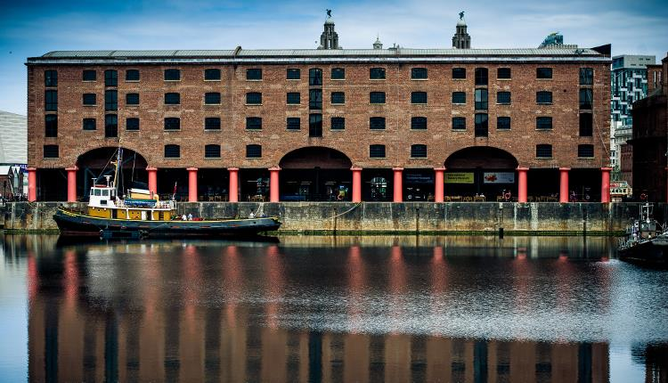
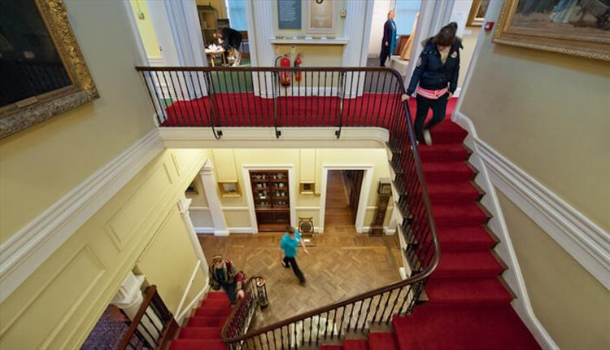

For the lovers of history and arts, photography and exploration, good news for you!
Liverpool houses some of the most iconic historical building in England.
Do check out the Tourists Attraction page for even more interesting hot spots
Royal Albert Dock Liverpool
The Royal Albert Dock is a complex of dock buildings and warehouses in Liverpool, England. Designed by Jesse Hartley and Philip Hardwick, it was opened in 1846, and was the first structure in Britain to be built from cast iron, brick and stone, with no structural wood
Direction: 3-4 The Colonnades, Liverpool L3 4AA, United Kingdom

Sudley House
Sudley House is a historic house in Aigburth, Liverpool, England. Built in 1824 and much modified in the 1880s, it is now a museum and art gallery which contains the collection of George Holt, a shipping-line owner and former resident, in its original setting.
Direction: Mossley Hill Rd, Liverpool L18 8BX, United Kingdom

Williamson Tunnels Heritage Centre
The Williamson Tunnels are a series of extensive subterranean excavations, of unknown purpose, in the Edge Hill area of Liverpool, England. They are thought to have been created under the direction of tobacco merchant, landowner and philanthropist Joseph Williamson between 1810 and 1840.
Direction: The Old Stableyard, Williamson Tunnels Heritage Centre, Smithdown Ln, Liverpool L7 3EE, United Kingdom
Friends of Williamson's Tunnels
No information available about this place
Direction: Mason St, Edge Hill, Liverpool L7 3EW, United Kingdom
Museum of Liverpool
The Museum of Liverpool in Liverpool, England, is the newest addition to the National Museums Liverpool group having opened in 2011 replacing the former Museum of Liverpool Life
Direction: Pier Head, Liverpool Waterfront, Liverpool L3 1DG, United Kingdom